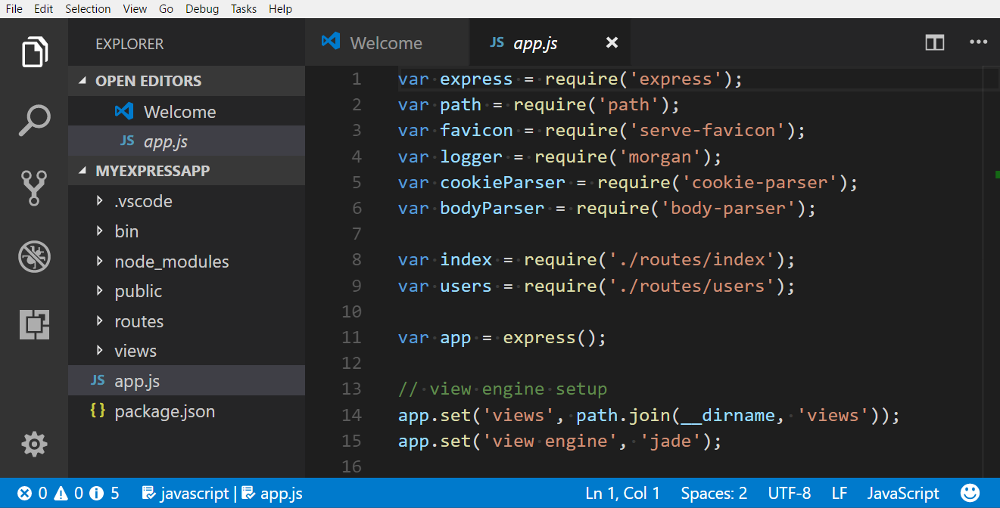
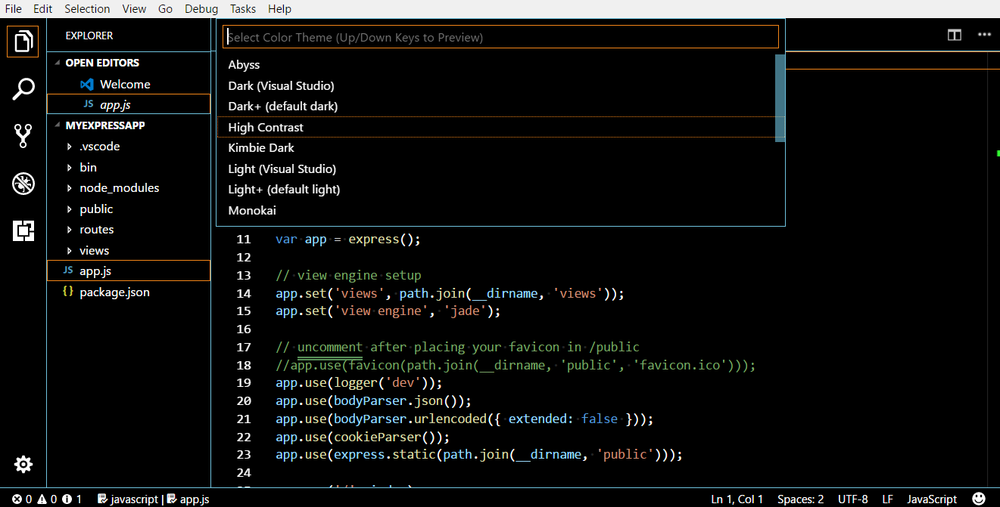

Visual Studio Codeにはすべてのユーザーが使い勝手のよいエディターにする機能が多く備わっています。ズームとハイコントラストはエディターの可読性を向上させ、キーボードナビゲーションによりマウスなしで操作でき、エディタはスクリーンリーダー用へ最適化しています。
ズーム
VS Codeはエディタのズームレベルを変更可能です。表示 > 拡大 か ⌘= (Windows, Linux Ctrl+=)) でズームレベルを上昇します。ズームレベルを低下する場合は表示 > 縮小か⌘- (Windows, Linux Ctrl+-))を試してください。
なおこれらの操作の場合には、レベルが20%ずつ変化します。

ズームレベルの固定
ズームレベルを調整した場合はwindow.zoomLevel設定で値を保持できます。このときのデフォルト値は0です。
ハイコントラストテーマ
ハイコントラストをすべてのプラットホーム上でサポートしています。配色テーマを変更するにはファイル > 基本設定 > 配色テーマで配色テーマの選択を表示した後High Contrastを選択します。

キーボードナビゲーション
VS Codeはマウスを使わずに操作できるようにコマンドパレット (⇧⌘P (Windows, Linux Ctrl+Shift+P))でコマンドの完全なリストを提供しています。コマンドパレットでは、入力した文字に基づいて並び替えを行います。
またコマンド用のプリセットキーボードショートカットを沢山用意しています。これらはコマンドパレットの右側に表示します。

独自のキーボードショートカットも設定可能です。キーボードショートカット(ファイル > 基本設定 > キーボードショートカット)は、左側に既定のショートカット 右側にカスタマイズ可能なkeybindings.jsonを表示します。詳細についてはKey Bindings を確認してください。
タブナビゲーション
Tabを使ってUIを移動することができます。Shift+Tabで逆順に移動することも可能です。この移動の場合は要素がフォーカスしたとき、UIの周りにインジケーターを表示します。
タブナビゲーションをサポートする場所は次のとおりです:
- アクティビティーバー(Files、Search、Git、Debug)
- 折りたたみ可能なセクションのヘッダー
- ビューとセクション
- エクスプローラーのツリーアイテム
タブトラッピング
既定の設定ではソースコードファイル内でTabを押すとタブ文字(インデント設定に応じてスペース)を挿入して、開いているファイルから離れることはありません。⌃⇧M (Windows, Linux Ctrl+M)でTabのトラッピング機能を切り替えたらTabでファイルからフォーカスを外すことができます。もしTabトラッピングがオフなら、ステータスバーにインジケーターを表示します。

コマンドパレット(⇧⌘P (Windows, Linux Ctrl+Shift+P))からToggle Use of Tab Key for Setting Focus(和訳不明)を実行することでもTabトラッピングを切り替えることが可能です。
読み取り専用ファイルではTabキーを捉えることはありません。統合ターミナルはTabトラップモードを使えるよう⌃⇧M (Windows, Linux Ctrl+M)で切り替えることができます。
スクリーンリーダー
VS Codeはテキストをページング方式にもとづく方法を使用してスクリーンリーダーをサポートしています。私たちはNVDA screen readerを使ってテストしていますが、すべてのスクリーンリーダーで機能すると考えています。
次/前のエラーまたは警告へ移動(F8 /⇧F8 (Windows, Linux Shift+F8))をしたときスクリーンリーダーはエラーと警告のメッセージを読み上げます。
また、提案がポップアップしたときも読み上げます。このとき提案をAlt+UpかAlt+Downで移動するか Shift+Escapeを使用して提案を却下できます。もし、この自動のポップアップ表示無効化したいときはeditor.quickSuggestionsで設定してください。
アクセシビリティのヘルプ
⌥F1 (Windows, Linux Alt+F1)を押すとアクセシビリティのヘルプダイアログを表示して、さまざまな状態を確認できます。

デバッガーのアクセシビリティ
デバッガーのアクセシビリティには次の機能があります:
- デバッグステータス(たとえば:開始、ブレークポイント、終了など)の変更表示。
- すべてのデバッグアクションへキーボードからの操作。
- デバッグ表示とデバッグコンソールの両方でタブナビゲーションをサポート。
- デバッグホバーにキーボードから操作(⌘K ⌘I (Windows, Linux Ctrl+K Ctrl+I))。
既知の問題
VS Codeにはプラットホームに応じていくつかの既知の問題があります。
Windows
矢印キーを利用してメニューバーのアイテム間を移動することができません。これはElectronの問題#2504によるものです。
Mac
VoiceOverを使用したエディタのスクリーンリーダーは限られます。
Linux
スクリーンリーダーのサポートはありません。
次のステップ
次を見てください:
- Visual Studio Code User Interface - A quick orientation to VS Code.
- Basic Editing - Learn about the powerful VS Code editor.
- Code Navigation - Move quickly through your source code.